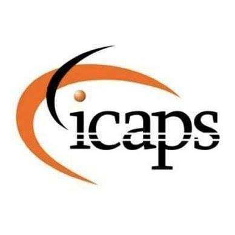
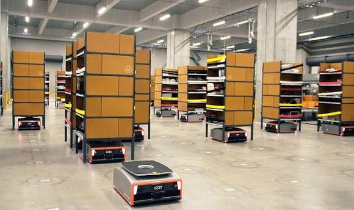
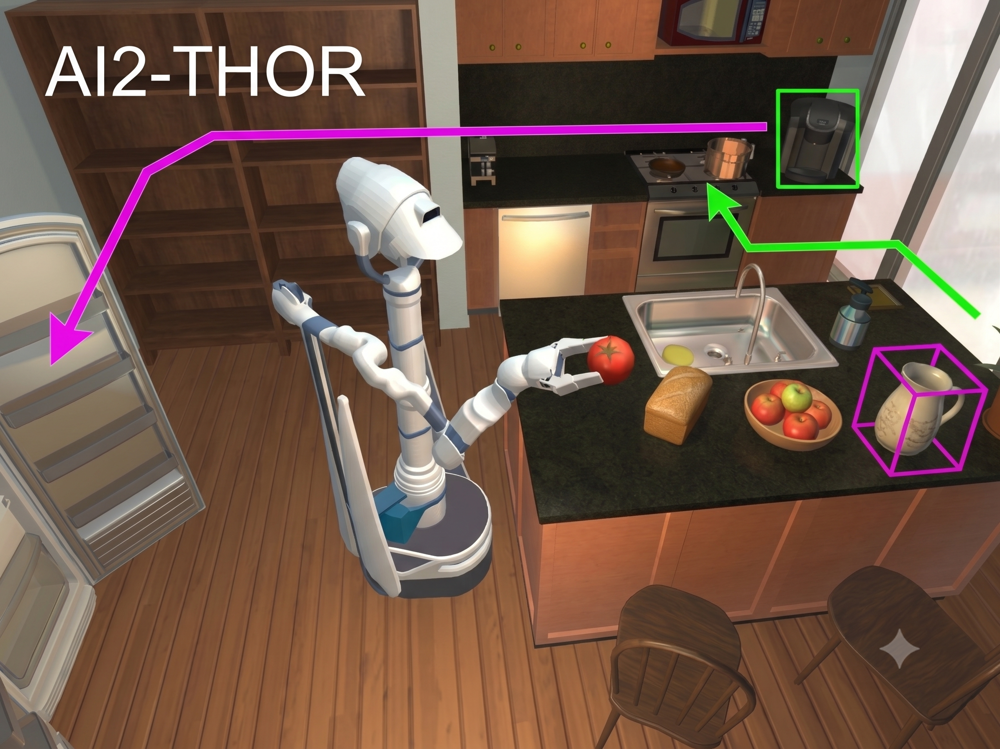

Rajesh Mangannavar · Prasad Tadepalli
Oregon State University

Running example: a warehouse robot must find and deliver packages — it can't see everything
Warehouse Robots — the Real Task

Simplified Version — Still Hard!
Sequential decisions under partial observability = POMDP
Build a search tree at each timestep to select the best action
BetaZero: learn Vθ and Pθ to guide the search, AlphaZero-style — it works, but it doesn't scale
What we need: learn on small problems, deploy on large ones
→ a belief representation whose learned knowledge transfers across problem sizes
A belief has structure — objects, attributes, actions, and their uncertainty. A fixed vector flattens it; a graph keeps it.
✗ Even where training works: every new size ⇒ new network ⇒ retrain
✗ And at large sizes it doesn't: training means solving large problems ⇒ the deadlock
Nodes & edges carry belief probabilities; the graph just grows.
✓ One network for every size — nothing to retrain
✓ Trains on small problems only — the deadlock never appears
One fix for both problems: learn entirely on small problems, deploy at any size
Deployment-size problems are never solved during training
4 POMDP benchmarks — partial observability, zero-shot generalization
1D localization. Visit light region to reduce uncertainty before reaching goal.
n×n grid, k rocks of unknown quality. Noisy distance-dependent sensor.
Find k hidden objects on n×n grid. Range-limited sensor.
Locate k objects, transport to goals. Perception + manipulation.
All methods trained and tested on identical sizes — Returns ± SE
Comparable on shared domains (LD, RS) despite using a general graph architecture.
Trained on small, tested on 2–6× larger — Returns ± SE. † = timeout
Train on small instances, deploy on 2–6× larger — no retraining needed.
The GNN learns relational patterns, not absolute positions.
Information Gathering
“High entropy on attribute nodes connected to a Check action → checking that rock has high information value.”
Same pattern applies whether 5 or 25 rocks.
Action Readiness
“Belief-weighted edges near the sample action indicate high-confidence state → sampling is worthwhile.”
Structural relationship, not domain-specific.
Why This Transfers
Patterns are about graph structure — connectivity, edge weights, node neighborhoods — not coordinates or object IDs.
Adding more objects extends the graph; same patterns apply.
Remember the deadlock: to guide search at scale, you first had to solve problems at scale
The Deadlock, Broken
Before: learned guidance existed only at sizes you could afford to solve, over and over, during training.
Now: train once on tractable instances → guide search on problems 2–6× larger than anything solved during training — no retraining.
Next Stop: Real-World Rearrangement

POMDP planning already tackles household object search & rearrangement (shown: AI2-THOR) — but planning speed is the bottleneck. Size-invariant learned guidance is a path to making it practical.
Benchmarks here are simplified — but the representation applies to any object-centric POMDP
Belief-to-graph construction — represents beliefs as uncertainty-aware graphs that scale with the problem
Matches or beats baselines on same-size tests — zero-shot generalization to 2–6× larger instances
Core Message
Represent the world — and its uncertainty — in a size-invariant way: learn from problems you can solve, generalize to the ones you can't.
Future: Real-world rearrangement — POMDP planning works there, but slowly. Learned guidance can make it practical.
Thank you! Questions?
G + number to jump · T for slide navigator
Why this structure: separates persistent elements (entities, actions) from belief-dependent ones (attribute instances); unifying locations and objects treats navigation and manipulation as similar operations; selective attribute creation handles multimodal beliefs — if the robot is plausibly in the kitchen or hallway, both At-nodes exist, with edge weights carrying their probabilities.
Attribute nodes are instantiated only with sufficient particle support — not all possible groundings
RockSample example (τ = 0.3): At(robot,(1,1)) = 1.0 → node; IsGood(R1) = 0.40 and IsGood(R2) = 0.75 → nodes; their complements IsBad(R1) = 0.60, IsBad(R2) = 0.25 — the 0.25 falls below τ and is not instantiated.
Three functions: belief-weighted relationships (edge weight = strength of belief) · action-specific context (e.g. co-location requirements for sampling) · particle-support metadata separating confident beliefs from uncertain hypotheses.
Why both φbelief and φsupport? They derive from the same particle support, but the categorical version is an inductive bias: explicit signal for patterns like “split support ⇒ information-gathering is valuable.” E.g. IsGood(rock1) at φbelief = 0.72 is strong, while 0.68 is weak — the transition is salient even though the values are close. A sufficiently expressive GNN could learn such boundaries from φbelief alone; the categorical feature makes them easier to learn from limited data.
Shared encoder, separate MLP heads (rather than independent networks): avoids redundant feature learning and halves inference cost during MCTS.
Supervised learning: Vθ : B → ℝ and πφ : B × A → [0,1] from tuples (bi, vi*, πi*)
Mean squared error for value prediction + cross-entropy for action classification, with weighting coefficients λv, λp. Leverages existing planning algorithms to generate high-quality training targets.
Tree traversal uses PUCT adapted from AlphaZero to the belief-space setting:
Per simulation: sample s ∼ b → step to get (s′, o, r) → weighted particle belief update b′ → add node if b′ ∉ T → convert G′ = φ(b′) → recurse → backpropagate N(b,a) and running Q(b,a).
Generalization training protocol: LightDark — train on size 5, test on 10. RockSample — train on 5×5 to 10×10 grids with 5–10 rocks; test on (15,15), (20,20), (25,25). MOS & Rearrangement — train on grid sizes 3–4 with 2–3 objects; generalize to grid sizes 5–8 with 3–6 objects.
| Domain | Full (MCTS) | Raw Pθ | Raw Vθ* |
|---|---|---|---|
| LightDark(10) | 17.5 ± 1.2 | 14.4 ± 1.3 | 13.3 ± 1.4 |
| RockSample(15,15) | 20.5 ± 0.8 | 11.1 ± 2.0 | 9.1 ± 2.2 |
| MOS(5,3) | 18.0 ± 1.5 | 10.8 ± 1.8 | 9.9 ± 2.0 |
| Rearrange(5,2) | 12.5 ± 2.0 | 5.6 ± 2.2 | 6.3 ± 2.0 |
* one-step look-ahead using only the value network. Same-size setting (Table 1).
Findings: the policy network alone (no MCTS) reaches 60–80% of full performance; one-step look-ahead with the value network performs slightly worse. The combination through MCTS is consistently best — the two networks provide complementary guidance.
All methods trained and tested on the same problem size — Returns ± SE
| Domain | GZ Full | GZ Raw Pθ | GZ Raw Vθ* | BZ Full | BZ Raw Pθ | BZ Raw Vθ* | POMCPOW | DESPOT | AdaOPS |
|---|---|---|---|---|---|---|---|---|---|
| LD(10) | 17.5±1.2 | 14.4±1.3 | 13.3±1.4 | 16.17±1.58 | 13.98±1.08 | 12.45±1.13 | 1.08±0.53 | 0.73±0.44 | 6.28±2.03 |
| RS(15,15) | 20.5±0.8 | 11.1±2.0 | 9.1±2.2 | 19.87±0.91 | 11.04±0.88 | 9.44±0.55 | 11.01±0.67 | 18.83±0.81 | 20.53±0.81 |
| MOS(5,3) | 18.0±1.5 | 10.8±1.8 | 9.9±2.0 | — | — | — | 7.5±1.5 | 6.4±1.8 | 15.5±2.0 |
| RG(5,2) | 12.5±2.0 | 5.6±2.2 | 6.3±2.0 | — | — | — | 4.3±1.5 | 3.4±1.5 | 7.7±2.0 |
* one-step look-ahead using only the value network. “—” = unsupported domain: BetaZero only supports LightDark and RockSample.
GammaZero trained on small problems only; classical baselines run per-size — Returns ± SE
| Test Domain | GZ Full | GZ Raw Pθ | GZ Raw Vθ* | POMCPOW | DESPOT | AdaOPS |
|---|---|---|---|---|---|---|
| LightDark(10) | 15.2±1.5 | 12.1±1.6 | 11.2±1.7 | 1.08±0.53 | 0.73±0.44 | 6.28±2.03 |
| RockSample(15,15) | 17.8±1.2 | 11.1±2.0 | 9.1±2.2 | 11.01±0.67 | 18.83±0.81 | 20.53±0.81 |
| RockSample(20,20) | 10.2±1.8 | 5.4±1.0 | 4.4±2.0 | 9.92±0.67 | 0.0±0.0† | 10.96±0.78 |
| RockSample(25,25) | 3.5±2.0 | 4.8±1.2 | 3.9±1.5 | 2.1±0.8 | 0.0±0.0† | 4.2±1.0 |
| MOS(6,4) | 14.5±1.8 | 8.8±2.0 | 8.1±2.2 | 5.5±1.6 | 4.8±1.8 | 12.2±2.0 |
| MOS(7,5) | 11.2±2.0 | 6.5±2.2 | 6.0±2.3 | 3.8±1.8 | 3.2±2.0 | 9.0±2.2 |
| MOS(8,6) | 8.0±2.2 | 4.8±2.5 | 4.5±2.5 | 0.0±0.0† | 0.0±0.0† | 5.8±2.5 |
| Rearrange(6,4) | 9.2±2.0 | 4.5±2.3 | 5.0±2.2 | 3.0±1.6 | 2.4±1.8 | 5.8±2.0 |
| Rearrange(7,4) | 6.8±2.2 | 3.2±2.5 | 3.8±2.3 | 0.0±0.0† | 0.0±0.0† | 4.0±2.2 |
| Rearrange(8,5) | 4.5±1.8 | 2.2±1.6 | 2.8±1.5 | 0.0±0.0† | 0.0±0.0† | 2.9±1.7 |
* one-step look-ahead. † search timeout/failure. BetaZero cannot run zero-shot at all (fixed input dimensions).
Why: graph construction principles are identical at every size. Adding rocks simply adds object nodes and attribute instances — graph topology and edge types are unchanged, so the same GNN weights process problems of arbitrary scale.
Within scope, the schema (object types, attribute types, action types) is defined once per domain — graphs are then constructed automatically from any belief state.
Illustration of the paper's example: belief A — 50%: all objects in room X, 50%: all in room Y (perfectly correlated). Belief B — each object independently 50/50 between X and Y. Identical marginals ⇒ identical graphs, though the joint beliefs differ.
From the paper's conclusion. Dynamic graph construction (for open-world object sets) and hyperedges (for joint belief structure) also appear as needed extensions in the Limitations discussion.
| Method | Simulations at Evaluation | Notes |
|---|---|---|
| GammaZero (ours) | 50–100 | 100 for RockSample, 50 default for LightDark |
| BetaZero | 100 | same PUCT solver |
| POMCPOW (LightDark) | 100,000 | + 1 s wall-clock limit |
| POMCPOW (RockSample) | 200,000 | + 1 s wall-clock limit |
| AdaOPS | wall-clock budgeted | 1 s time limit |
| DESPOT | wall-clock budgeted | 1 s time limit |
Values from the experiment configurations.
Takeaway: comparable or better results with 1000–2000× fewer simulations than POMCPOW — the learned GNN makes each simulation count far more.
Sound bite: “GammaZero and BetaZero share the exact same PUCT implementation. The only difference is the belief representation — fixed-size MLP vs. our graph.”
Sound bite: “The baselines use QMDP upper bounds and exit-strategy heuristics hand-crafted for each domain. We use zero domain heuristics — only the learned GNN.”
| Parameter | LightDark | RockSample | MOS | Rearrangement |
|---|---|---|---|---|
| Sims — training data collection | 10 | 500 | 500 | 15,000 |
| Sims — evaluation | 50 (default) | 100 | 20,000 | 25,000 |
| Particles | 1,000 (default) | 1,000 | 1,000 | 1,500 |
| Exploration c (train) | 4.0 | 4.0 | 100.0 | 1,500.0 |
| Exploration c (eval) | 1.0 | 1.0 | 1,000.0 | 1,500.0 |
| k_action | 2.0 | 2.0 | 20.0 | 30.0 |
| α_action | 0.25 | 0.25 | 0.25 | 0.25 |
| k_state | 2.0 | 2.0 | 20.0 | 30.0 |
| α_state | 0.1 | 0.1 | 0.1 | 0.1 |
| Tree depth | 10 | 10 | 10 | 10 |
| Discount γ | 0.99 | 0.99 | 0.95 | 0.95 |
From the experiment configurations.
| Parameter | LightDark | RockSample | MOS | Rearrangement |
|---|---|---|---|---|
| Hidden dim | 128 | 256 | 512 | 512 |
| Message-passing rounds L | 5 | 5 | 6 | 7 |
| Attention heads | 8 | 8 | 8 | 8 |
| MLP layers (per head) | 2 | 2 | 3 | 3 |
| Dropout | 0.1 | 0.1 | 0.1 | 0.1 |
| Attention dropout | 0.2 | 0.2 | 0.2 | 0.2 |
| Node feature dim | 16 (default) | 100 | 150 | 180 |
| Edge feature dim | 4 (default) | 40 | 60 | 80 |
| Global feature dim | 16 (default) | 100 | 150 | 180 |
From the experiment configurations.
| Parameter | LightDark | RockSample | MOS | Rearrangement |
|---|---|---|---|---|
| Epochs | 100 | 100 | 150 | 200 |
| Batch size | 32 | 32 | 32 | 32 |
| Learning rate | 1e-4 | 1e-4 | 1e-4 | 5e-5 |
| Weight decay | 1e-4 | 1e-4 | 1e-4 | 1e-4 |
| Optimizer | Adam | Adam | Adam | Adam |
| Replay buffer size | 50,000 | 50,000 | 100,000 | 150,000 |
| Value / policy loss weights | 0.5 / 0.5 | 0.5 / 0.5 | 0.5 / 0.5 | 0.5 / 0.5 |
| Train / validation split | 80 / 20 | 80 / 20 | 80 / 20 | 80 / 20 |
Value loss: MSE · policy loss: cross-entropy · dynamic loss scaling: EMA α = 0.9 · hardware: RTX 3080, 2–4 h per domain.
| Parameter | LightDark | RockSample |
|---|---|---|
| MCTS solver | PUCT (same codebase) | PUCT (same codebase) |
| MCTS simulations | 100 (default) | 100 |
| Exploration c | default (1.0) | 50.0 |
| Progressive widening | default (enabled) | disabled entirely |
| Tree depth | 10 (default) | 15 |
| Particles | 500 | 1,000 |
| Network | MLP (fixed-dim input), layer 64 | MLP (fixed-dim input), layer 128 |
| Epochs / batch / LR | 50 / 1,024 / 1e-4 | 10 / 1,024 / 1e-3 |
| Optimizer / dropout | Adam / 0.2 | RMSProp / 0.5 (+ batchnorm, m=0.7) |
| L2 / Dirichlet noise | 1e-5 / α=0.03, ε=0.25 | 1e-5 / α=0.03, ε=0.25 |
Cannot generalize to new problem sizes — requires retraining per size. Note the harder-tuned search on RockSample (c=50, depth=15, no widening).
From the experiment configurations. All classical baselines run per-size with these domain-specific bounds and heuristics.
Enter to go · Esc to cancel